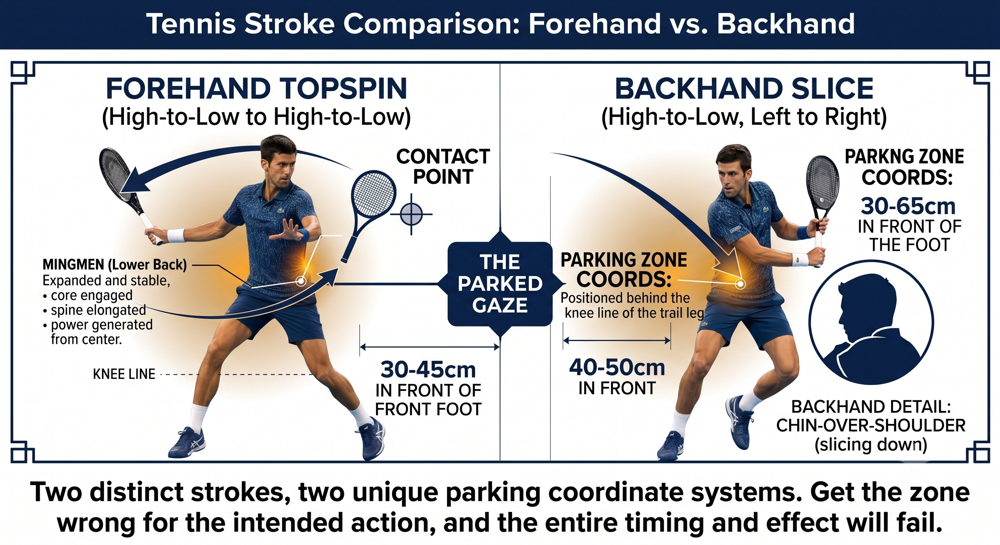

Chương 8: Quiet Eye¶
Neo Thị Giác (Q)¶
Đôi mắt bạn không theo dõi trái bóng. Chúng đỗ tại nơi tiếp xúc sẽ xảy ra.
Quiet Eye không phải là "nhìn theo bóng." Đó là một sự cố định dài và ổn định vào vùng tiếp xúc, trước khi cây vợt đến đó.
— Henry Phạm

Hình 8.1
Quiet Eye Thực Sự Là Gì¶
Nghiên cứu của Joan Vickers tại Đại học Calgary, cùng các nghiên cứu tiếp theo, đã xác lập một định nghĩa chính xác:
– Quiet Eye là một sự cố định cuối cùng vào một vị trí cụ thể — vùng tiếp xúc — bắt đầu trước khi vung tiến khởi động và kéo dài qua cả thời điểm tiếp xúc.
– Thời lượng: các tay vợt đỉnh cao giữ nó từ 300 đến 500 mili-giây; người chơi phong trào chỉ giữ được 100 đến 200.
– Khởi động: phải bắt đầu trước khi vung tiến bắt đầu, thường là ngay tại lúc đối thủ tiếp xúc bóng hoặc lúc bóng nảy.
– Kết thúc: phải kéo dài thêm 100 đến 200 mili-giây sau tiếp xúc.

Hình 8.2
– Vị trí: không phải trái bóng đang bay. Là khoảng không gian trống nơi tiếp xúc sẽ xảy ra — khoảng 30 đến 45cm phía trước chân trước của bạn.
Nguyên Lý Cốt Lõi¶
Bạn không theo dõi trái bóng suốt cả hành trình. Bạn đỗ mắt tại nơi tiếp xúc sẽ xảy ra, và để trái bóng tự đến với ánh nhìn của bạn.
Vì Sao Quiet Eye Hiệu Quả¶
Bốn cơ chế biến Quiet Eye thành công tắc chủ đạo của toàn hệ thống.
Quy Tắc¶
Quiet Eye không phải là thị giác. Đó là chiếc neo cho phép cơ thể thực thi điều mà CORE đã quyết định.
Dòng Thời Gian Của Quiet Eye¶
Đây là cách sự cố định này diễn ra trong suốt một cú đánh.
Forehand Push: Đỗ Ở Đâu¶
Với cú forehand push, tiếp xúc ngang hông và hơi phía trước:
– Vị trí: 30 đến 45cm phía trước chân trước, ngang hông.

Hình 8.3
– Hình ảnh: bạn thấy vệt mờ của dây vợt gặp bóng trong khoảng không gian trống đó.
– Không phải trái bóng đang bay, cũng không phải mục tiêu — mà là chính vùng tiếp xúc.
– Câu lệnh: "đỗ" — mắt nhảy đến điểm đó và khóa lại. "Giữ" — ở nguyên đó qua tiếp xúc.
Backhand Một Tay Kiểu "Saber": Đỗ Ở Đâu¶
– Vị trí: 40 đến 50cm phía trước chân trước, hơi lệch bên, ngang ngực.
– Hình ảnh: bạn thấy cạnh vợt dẫn đầu, rồi mặt vợt vuông góc ngay tại điểm đó.

Hình 8.4
– Vị trí đầu: cằm giữ trên vai trước. Đừng quay cằm về phía lưới.
– Câu lệnh: "đỗ nghiêng người" — mắt khóa, cằm giữ nguyên. "Giữ" — cằm ở trên vai suốt qua tiếp xúc.
Mẹo Huấn Luyện¶
Hầu hết lỗi của cú backhand một tay đến từ việc cằm quay về phía lưới ngay lúc tiếp xúc. Cằm quay, đầu quay theo, vai mở ra, mặt vợt mở theo, và bóng bay rộng ra ngoài. Giữ cằm trên vai chính là Quiet Eye — và đó là thứ giữ cho mặt vợt luôn đúng.
Vô-Lê và Return: Các Trường Hợp Đặc Biệt¶
– Vô-lê: vùng tiếp xúc gần hơn, 15 đến 25cm phía trước. Đỗ sớm hơn, ngay tại lúc đối thủ tiếp xúc bóng. Giữ ngắn hơn, khoảng 50 mili-giây sau tiếp xúc.

Hình 8.5
– Return: bóng nhanh hơn và bạn có ít thời gian hơn. Đỗ tại lúc đối thủ tiếp xúc bóng, không phải lúc bóng nảy. Giữ qua tiếp xúc thêm 100 mili-giây.
– Serve: đỗ tại vùng tiếp xúc của chính bạn — đỉnh của cú tung bóng. Quiet Eye khóa vào cú tung bóng, không phải đối thủ.
– Overhead: đỗ tại điểm tiếp xúc của chính bạn, ở trên cao. Theo dõi bóng đến điểm đó, rồi khóa lại.
Cách Quiet Eye Sửa Các Lỗi Ghép Cụ Thể¶
Quiet Eye không phải điều gì trừu tượng — nó trực tiếp sửa chữa chính những lỗi cụ thể đã được nêu ra trước đó trong cuốn sách này.
Cách Huấn Luyện Quiet Eye¶
Huấn luyện Quiet Eye theo trình tự tăng dần, từ không bóng đến tốc độ thi đấu thật:
-
Đỗ Tĩnh (Không bóng): đứng vào tư thế, chọn một điểm trên hàng rào. "Đỗ" — mắt nhảy đến và khóa lại. Giữ 3 giây. "Thả." 20 lần. Cảm nhận mắt nhảy, chứ không trôi dạt.
-
Shadow Đỗ: thực hiện cú vung không bóng. Khi nghe "đỗ", mắt bạn nhảy đến điểm tiếp xúc và khóa lại. Vung qua. Mắt vẫn ở nguyên điểm đó qua cả thời điểm tiếp xúc tưởng tượng. 30 lần.
-
Nảy - Đỗ - Đánh: đối tác nạp bóng. Bạn nói "đỗ" tại lúc bóng nảy, mắt nhảy đến vùng tiếp xúc. Vung. 20 quả bóng. Đối tác xác nhận mắt bạn không liếc sớm.
-
Drill "Đỗ... Giữ... Thả": nói "đỗ" tại lúc bóng nảy, "giữ" tại tiếp xúc, "thả" sau follow-through. Các câu lệnh bằng lời giúp lập trình thời điểm đó vào cơ thể bạn.
-
Tiếp Xúc Với Mắt Nhắm: đánh 5 quả bóng với mắt mở, rồi 5 quả với mắt nhắm ngay tại tiếp xúc (đỗ trước, rồi nhắm mắt khi cú vung bắt đầu). Bài này huấn luyện khả năng cảm nhận bản thể và tính độc lập của Quiet Eye.
-
Phản Hồi Qua Video: quay video 240 khung hình/giây từ bên hông. Kẻ một đường trên màn hình đánh dấu vị trí đầu. Dừng hình tại tiếp xúc. Nếu đầu đã dịch chuyển hơn 2cm trước khi tiếp xúc, Quiet Eye đã bị gãy.
Mẹo Huấn Luyện¶
Từ "đỗ" chính là yếu tố thay đổi cuộc chơi thật sự. Nói nó thành tiếng buộc bộ não phải thực sự thực hiện cú nhảy đó. Không có từ đó, mắt sẽ trôi dạt. Hãy nói to trong 500 quả bóng, rồi chuyển sang thì thầm, rồi cuối cùng là im lặng.
Quiet Eye Cộng Tiền Đình (Q + V)¶
Quiet Eye cần một cái đầu ổn định. Một cái đầu ổn định cần một hệ tiền đình yên lặng. Chúng thực chất là một hệ thống:
– VOR — phản xạ tiền đình-mắt: khi đầu di chuyển, mắt di chuyển ngược lại để bù trừ. Nếu đầu bạn di chuyển trong lúc vung, VOR sẽ kéo mắt bạn ra khỏi vùng tiếp xúc.
– VSR — phản xạ tiền đình-cột sống: khi đầu di chuyển, nó tự động làm căng cổ, vai, và cẳng tay. Đầu yên lặng nghĩa là tay yên lặng.
– Vì vậy: khởi động Quiet Eye đồng nghĩa với việc đầu dừng lại. Ngay khoảnh khắc mắt bạn đỗ, đầu bạn phải đạt vận tốc bằng không.
– Huấn luyện cả ba như một gói: "cằm gập, mắt đỗ, đầu đóng băng." Cả ba điều này xảy ra ngay tại lúc bóng nảy.
BÓNG NẢY → MẮT ĐỖ → ĐẦU ĐÓNG BĂNG → VUNG QUA.
Danh Sách Kiểm Tra Quiet Eye¶
MẮT ĐỖ TẠI LÚC BÓNG NẢY. ĐẦU ĐÓNG BĂNG. GIỮ QUA TIẾP XÚC. THẢ RA SAU ĐÓ.
Những Điều Cần Nhớ¶
– Tại lúc đối thủ tiếp xúc bóng: theo dõi mềm, đầu di chuyển tự do.
– Tại lúc bóng qua lưới: xoay người, Kéo vợt ra sau bắt đầu.
– Tại lúc bóng nảy (bên bạn): mắt nhảy đến vùng tiếp xúc và khóa lại.
– Đầu dừng di chuyển ngay tại lúc bóng nảy — cằm gập, giữ ngang.
– Suốt cú vung và tiếp xúc, mắt vẫn giữ nguyên tại điểm tiếp xúc.
– Giữ nguyên trong 100 đến 200 mili-giây sau khi bóng rời khỏi dây vợt.
– Chỉ khi đó mới thả ra và nhìn về phía mục tiêu.
– Nếu bạn thấy hướng bóng đi trước khi nó rời khỏi dây vợt, nghĩa là bạn đã lén nhìn.
– Kiểm tra bằng video 240 khung hình/giây từ bên hông: đầu dịch chuyển ít hơn 2cm từ lúc bóng nảy đến tiếp xúc nghĩa là Quiet Eye của bạn vững chắc.
Chương Này Dẫn Đến Đâu¶
Chương này thiết lập biến số Q — Quiet Eye — trong hệ thống Q-V-ROOT-8-45-Impulse. Chương 9 bao quát V — ổn định tiền đình và phản xạ VOR — như nền tảng làm cho Q trở nên khả thi. Chương 10 bao quát F và P — fascia và cảm nhận bản thể — như phần cứng sinh học. Chương 11 bao quát T — tensegrity — như nguyên lý cấu trúc. Chương 12 bao quát chu kỳ căng-rút như động cơ vận hành.
←Chương TrướcChương 7: Hệ Thống COREChương TiếpChương 9: Ổn Định Tiền Đình→